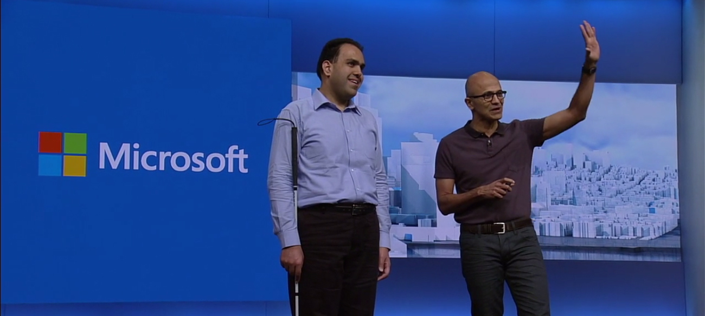
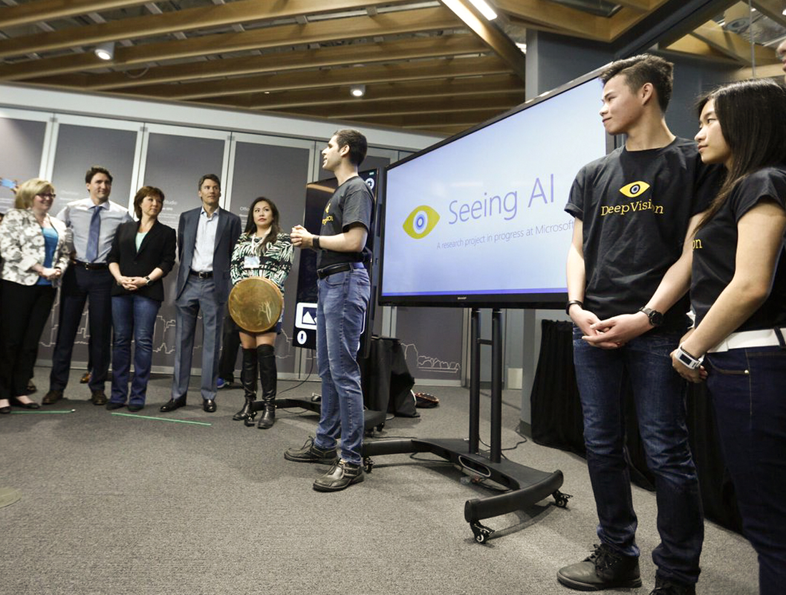
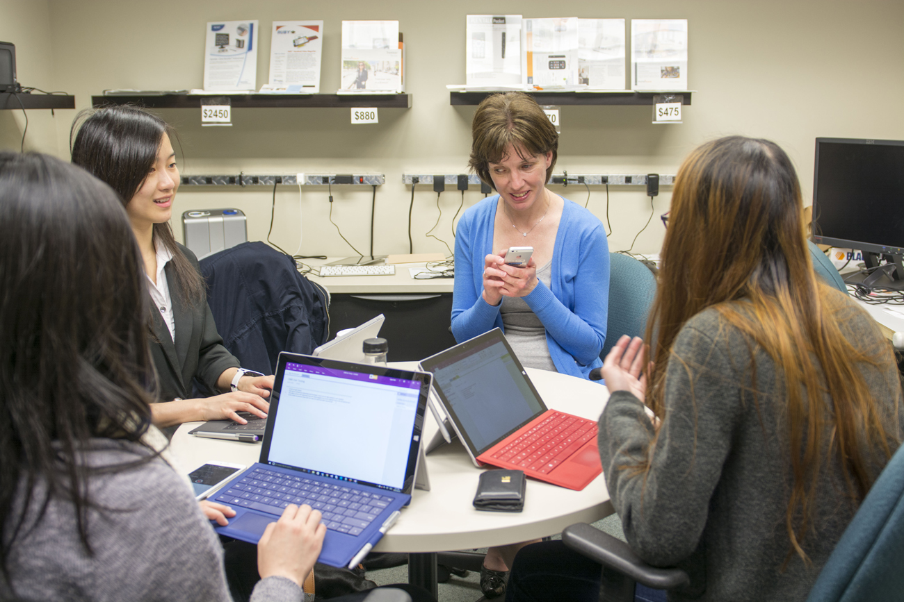
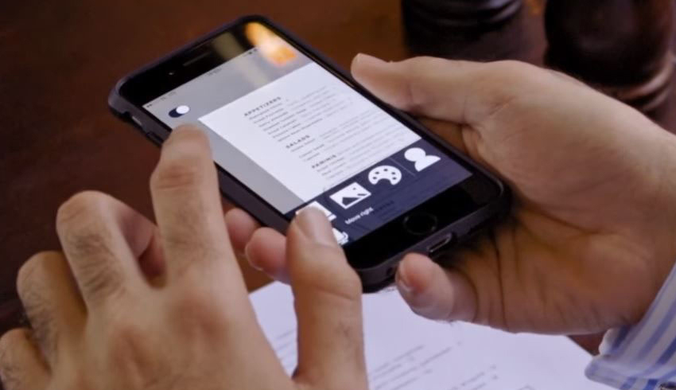

Microsoft Garage 2016 Internship

SeeingAI
MOBILE APP FOR THE VISUALLY IMPAIRED
COLLABORATORS:
Elias Haroun, Shweta Sharma, Chris Bianchet, Irene Chen, Leo Li, Wendy Lu, Nathan Lam, Juan Henao, Sara Kiani
PROBLEM STATEMENT:
The objective of the project is to use Microsoft Cognitive Services' API's to create an app that provides people with visual impairments an unobtrusive way to read text and explore their surroundings when braille or other forms of help are unavailable. We want to help them regain their independence.
CONTRIBUTIONS:
- Lead designer for SeeingAI
- Initial market research and defining of product and product goals
- Rapid iteration, validation, and refinement of app, UI, UX, and Userflow
- Design and conducting of user testing sessions
- Compile testing and feedback results to narrow down to final hero build
Seeing AI is an App that lets you hear the world around you: it is an app that translates visual information to audio information. This is used to assist people with visual impairments with everyday activities such as grocery shopping, reading menus, identifying colours, and describing their surroundings. The goal is to help people of the visually impaired community regain their independence.
A photo is taken, and the visual information is then interpreted by Microsoft Cognitive Services and returned as a string of data. The challenge is to identify desired use case scenarios for the end users, and to provide effective tactile and audio feedback in translating the original visual information. Use case scenarios are selected based off of feasability in scope and its usefulness validated through research and user testing.
I was proud to present my industrial design perspective to the team, as the importance of sensory experiences other than the visual is also crucial in physical product design; these aspects of sensory experiences may have been neglected by the traditional software UI/UX designer.
 SeeingAI being demoed at //Build2016 by Saqib Shaikh (left) and CEO Satya Nadella (right)
 SeeingAI being presented to Prime Minister Justin Trudeau (far left) by my colleagues
USER TESTING  User testing was a crucial part of this project, as the experiences of the visually impaired and how they navigate their surroundings varies drastically from sighted people. Furthermore, users with different levels of vision interact with their surroundings differently and have different user needs. It was decided to focus on designing the user experience of the app for the blind, as designing for the furthest extreme of the spectrum encompasses those with less visual impairment.
THE DESIGN JOURNEY
The Seeing AI app has changed drastically throughout the course of this 4 month internship. Through rapid prototyping and extensive user testing with the app, we have finally focused our direction to a hero build for hand-off at the end of the internship.
Design-wise, the app went through 5 major iterations.
SPRINT 5: "INTENT BEFORE QUERY"

Above is the iteration seen on //Build2016
For this iteration, it was proposed to reverse the user flow to pick an intent/query mode before taking a picture, since most users go into the app with a specific intent on what they want to discover about their surroundings. This creates a more seamless UX.
This hypothesis was formulated while observing the participants in a previous user testing session; it is tested and validated during the next.